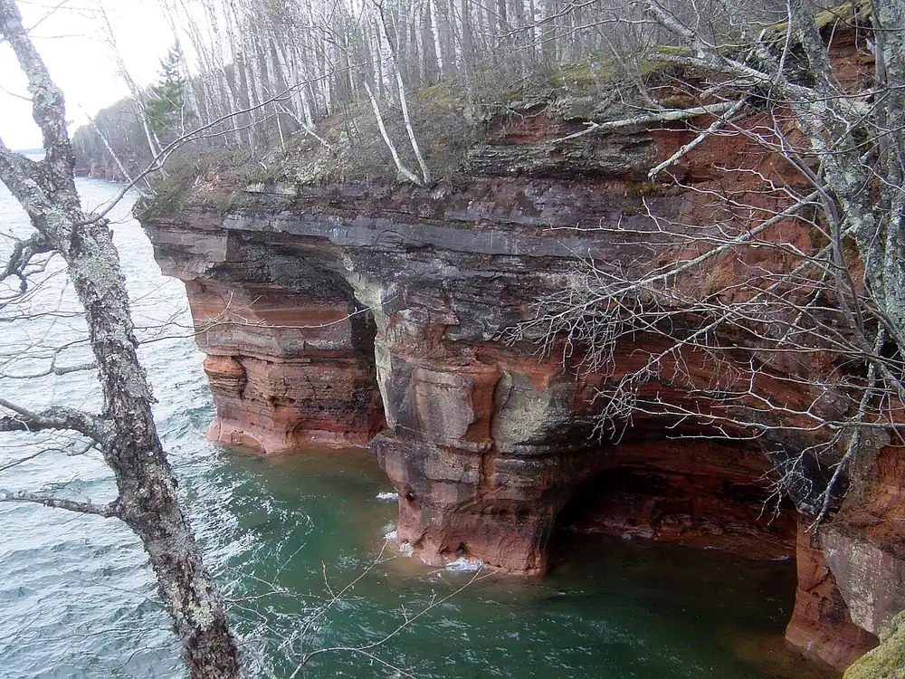

Grottes marines des Apostle Islands
Lac Supérieur, Wisconsin, États-Unis · kayak

Depuis Meyers Beach, on longe en kayak les falaises de grès rouge du rivage continental de l’Apostle Islands National Lakeshore, sculptées en arches et en grottes par les vagues du lac Supérieur.
- Lieu
- Lac Supérieur, Wisconsin, États-Unis
- Niveau
- Intermédiaire
- Activités
- kayak
- Type d'eau
- lake
- Coordonnées
- 46.88, -91.05 (position approximative du secteur)
Dangers à connaître
- Eau du lac Supérieur très froide toute l’année : combinaison ou étanche recommandée.
- Vagues qui se lèvent vite et rebondissent contre les falaises.
- Plusieurs kilomètres de falaises sans aucun endroit pour débarquer.
Le conseil d'Ocean Buddy
Consulte la prévision « sea caves » du parc national avant de partir et fais la sortie avec un guide si tu débutes : le lac peut changer en une heure.
Ouvrir dans Ocean Buddy Télécharger sur l'App Store
Source : Fiche Ocean Buddy · septembre 2026 · à vérifier localement.